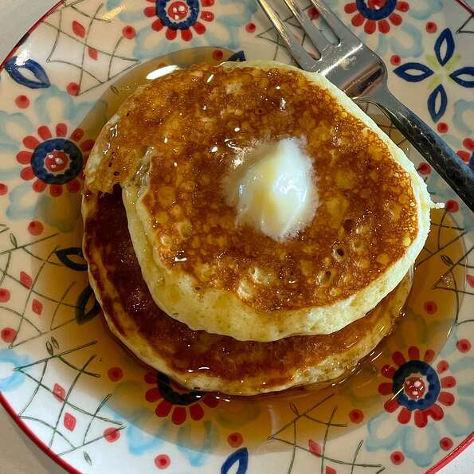

Fluffy Pancakes

Description
Tall and fluffy. These pancakes are just right. Topped with strawberries and whipped cream, they are impossible to resist.
Ingredients
- 3/4 Cup Milk
- 2 TBSP White Vinegar
- 1 Cup Flour
- 2 TBSP white sugar
- 1 tsp baking powder
- 1/2 tsp baking soda
- 1/2 tsp salt
- 1 egg
- 2 tbsp butter, melted
- cooking spray
Steps
- Combine milk with vinegar in a medium bowl and set aside for 5 minutes to "sour".
- Combine flour, sugar, baking powder, baking soda, and salt in a large mixing bowl. Whisk egg and butter into "soured" milk. Pour the flour mixture into the wet ingredients and whisk until lumps are gone.
- Heat a large skillet over medium heat, and coat with cooking spray. Pour 1/4 cupfuls of batter onto the skillet, and cook until bubbles appear on the surface. Flip with a spatula, and cook until browned on the other side.